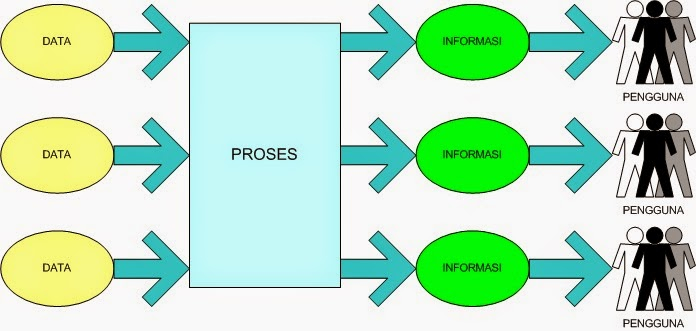
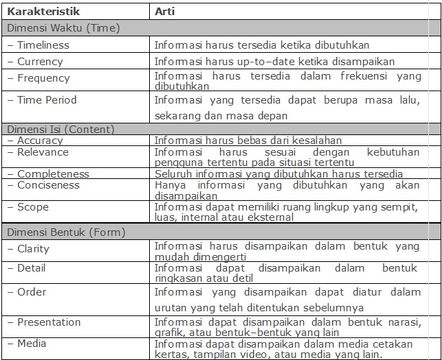

Dasar Sistem Komputer
By Awaludin Siking
Data
fakta atau observasi tentang fenomena fisik atau transaksi bisnis atau lebih spesifik, data adalah pengukuran- pengukuran obyektif terhadap atribut-atribut(karakteristik) darientitas tertentu seperti manusia, tempat, sesuatu atau kejadian. O’Brien (1999)
Informasi
Data yang telah diproses atau data yang mempunyai arti (McLeod, 1995).
Data yang ditempatkan agar mempunyai arti dan berguna bagi penggunanya (O’Brien, 1999).
Kata kunci pada terminology informasi adalah “harus mempunyai arti” karena apabila tidak maka tetap sebagai data. Selain itu kepada siapa informasi itu akan disampaikan juga sangat penting untuk diperhatikan.

Tingginya kebutuhan pada informasi tidak hanya pada jumlah, tapi juga pada kualitasnya. Informasi yang sudah basi, tidak akurat, atau sulit dimengerti akan menjadi sesuatu yang tidak berharga bahkan kadang- kadang membahayakan kelangsungan hidup sebuah organisasi. Ada tiga dimensi kualitas pada informasi yaitu waktu (time), isi (content) dan bentuk (form).
Tabel Karakteristik kualitas informasi (O’Brien, 1999).


 Perbedaan Jaringan 3G dan 4G
Perbedaan Jaringan 3G dan 4G
 Jumlah Core dan Hubungannya dengan
Jumlah Core dan Hubungannya dengan Pengertian Subnetting IP Address
Pengertian Subnetting IP Address  Cara Mengatur Layar di Windows Saat
Cara Mengatur Layar di Windows Saat Pengertian dan Cara Defrag/Defragment
Pengertian dan Cara Defrag/Defragment  Macam macam file audio dan
Macam macam file audio dan  Apa itu Extreme Programming ?
Apa itu Extreme Programming ?